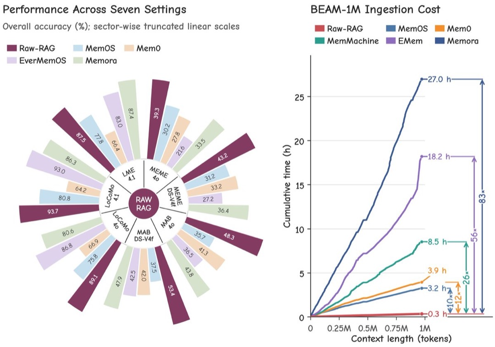
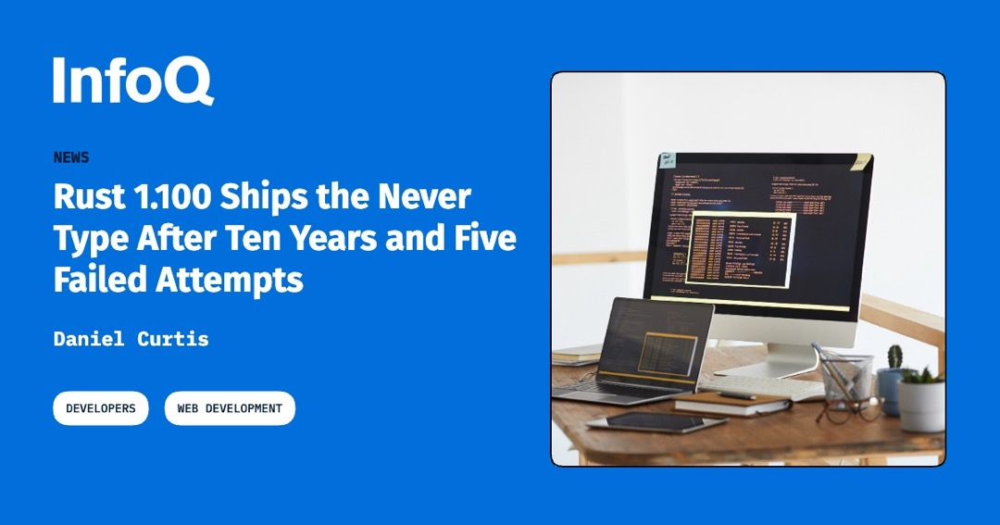
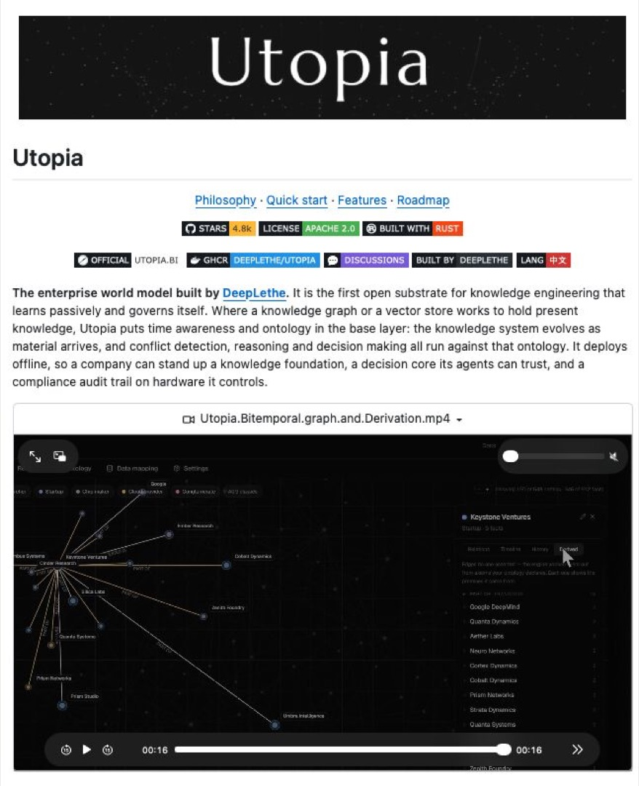
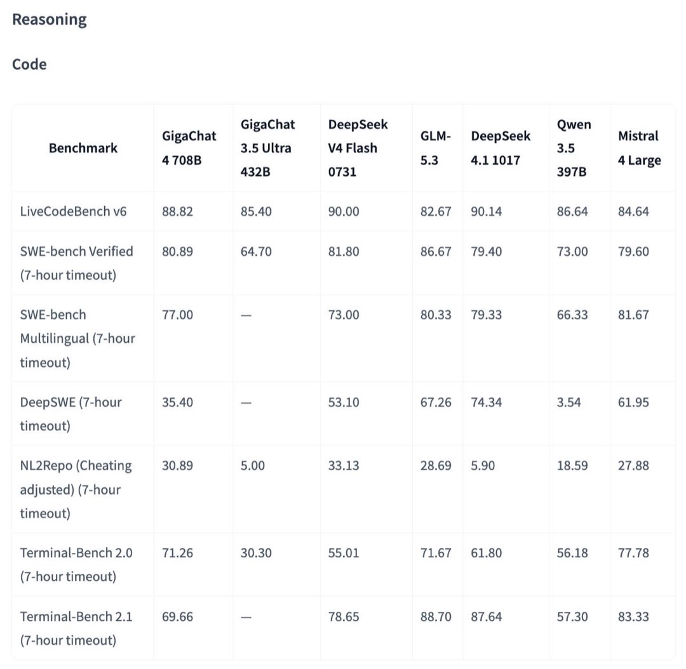

本期速览
01 英伟达让模型自管上下文，准确率提升
02 Agent Infra 存储选型全景梳理
03 原始对话分块检索优于记忆框架
06 Rust 1.100 稳定 never type
01｜英伟达让模型自管上下文，准确率提升
来源（X） · @leo114119 · 2026-11-26 21:50
目前几乎所有 Harness（Claude Code、Cursor、Antigravity）管的都是「框架驱动压缩」——等窗口快满了，外部脚本一刀切把早期历史总结成摘要。毛病很明显：框架根本不知道哪段旧报错或文件结构后面还要用，经常一刀把关键线索切废，或者切完导致整段前缀 KV Cache 全部失效。
英伟达在开源框架 nooa 里试了「模型自管上下文」，直接给 LLM 暴露一个 Context API，让模型自己决定什么时候删、删哪段。结果在 32K 紧张预算下，GPT-6.1 在 OfficeQA Pro v2 上的准确率直接从 21% 飙到 56%，Kimi 用少 41% 的输入 token 反而考更高；更关键的是推理引擎层面可以复用编辑点之后未变动后缀的 KV Cache，把动态编辑上下文的 prefill 惩罚压下来。接下来 Agent Harness 的演进，大概率要从「外部硬截断」转向「把内存管理权下放给模型自己」。
论文链接：https://arxiv.org/abs/2611.34147
02｜Agent Infra 存储选型全景梳理
来源（X） · @Jerry_fsy · 2026-11-27 18:18
因此，我在这里汇总了一下，Agent运行中常常涉及到的存储方式，以及各种存储方式适用于什么样的场景：
一、 核心状态与业务层（Agent 的“账本”与“存档点”）
1关系型数据库（RDBMS / 分布式 SQL） ◦ 代表：
PostgreSQL、MySQL、TiDB ◦ 存什么：
用户/租户权限、Agent 配置、会话元数据、计费账单，以及 Durable Execution（持久化执行）的状态机 Checkpoint。 ◦ 为什么不可替代：
Agent 执行一个复杂任务可能耗时几分钟甚至几天，中途崩溃需要断点续传，且涉及工具调用（如扣费、发邮件）时必须有严格的 ACID 事务保证。
2内存型 KV 存储（In-Memory KV / Cache） ◦ 代表：
Redis ◦ 存什么：
活跃会话的短期记忆（Short-Term Memory）、流式输出（SSE）的临时状态、分布式锁、限流计数，以及 语义缓存（Semantic Cache）（相似问题直接命中缓存，省去调 LLM 的开销）。 ◦ 核心特征：
亚毫秒级延迟，适合高频读写、允许过期（TTL）的瞬态数据。
二、 知识与记忆层（Agent 的“大脑”与“图书馆”）
3向量数据库（Vector DB） ◦ 代表：
Qdrant、Milvus、Pinecone、Weaviate、pgvector ◦ 存什么：
文档切片和长期记忆的 Embedding 向量。 ◦ 解决什么问题：
支撑 RAG 和语义记忆（Semantic Memory），通过近似最近邻（ANN）算法实现“按意思搜”而非“按字面搜”。
4全文检索引擎（Full-Text Search） ◦ 代表：
Elasticsearch、OpenSearch、Meilisearch ◦ 存什么：
倒排索引（BM25）。 ◦ 为什么需要它：
纯向量检索对精确专有名词、错误码、SKU 编号、代码符号表现比较差。生产级 RAG 几乎都采用 向量 + 全文的混合检索（Hybrid Search）。
5图数据库（Graph DB） ◦ 代表：
Neo4j ◦ 存什么：
实体（人、项目、概念）及其关联关系。 ◦ 解决什么问题：
支撑 GraphRAG 和 情景/关系记忆（Episodic Memory）。当 Agent 需要跨多份文档做跳转推理，或追踪“用户偏好随时间的变化”时，图结构比扁平的向量切片更有效。
三、 文件、产物与执行环境层（Agent 的“工作台”与“仓库”）
6对象存储（Object Storage） ◦ 代表：
AWS S3、MinIO、SeaweedFS ◦ 存什么：
大体积非结构化数据——用户上传的 PDF/音视频、Agent 生成的报告/图表/代码包、网页抓取的 HTML 快照，以及可观测性日志中的超大 Prompt/Response Payload。 ◦ 核心特征：
成本极低、容易扩展、无 Schema 约束，但没有查询能力，通常需要配合关系型数据库存元数据索引。
7沙箱文件系统与块存储（Sandbox FS / Block Storage） ◦ 代表：
OverlayFS、Copy-on-Write (CoW) 快照、FUSE、EBS/NFS（如 E2B、Modal 等沙箱底层） ◦ 存什么：
Coding Agent 或 Computer Use Agent 在隔离容器/微虚拟机里运行代码时的工作目录、依赖包和临时文件。 ◦ 核心特征：
需要标准的 POSIX 文件系统语义，以及毫秒级克隆、快照与回滚能力，方便 Agent 试错后重置环境。
四、 可观测性、评估与异步调度层（Agent Infra 的“黑匣子”与“传送带”）
8分析型数据库（OLAP） ◦ 代表：
ClickHouse ◦ 存什么：
海量的 Trace、Span、LLM 调用耗时、Token 消耗、成本统计以及 Eval（离线/在线评估）打分结果（例如 Langfuse 的核心存储层）。 ◦ 为什么用它：
Agent 一次请求可能触发几十次工具调用和模型推理，日志呈指数级增长。OLAP 擅长超高吞吐追加写入，以及秒级的多维聚合分析。
9消息队列与事件日志（Message Queue / Event Log） ◦ 代表：
Kafka、NATS、Redis Streams ◦ 存什么：
异步任务指令、Agent 运行事件流、待落盘的 Trace 数据。 ◦ 解决什么问题：
虽然常被归为中间件，但在 Agent Infra 中它承担了持久化事件日志的角色——既用于异步 Run API 的任务解耦和削峰填谷，也用于把高频产生的可观测性数据平稳写入 ClickHouse 和对象存储。
10时序数据库（TSDB） ◦ 代表：
Prometheus、VictoriaMetrics ◦ 存什么：
偏底层 Infra 的监控指标（GPU 利用率、推理引擎队列长度、沙箱 CPU/内存水位、API P99 延迟）。
五、 推理加速层（最容易被忽略的“隐形存储”）
11KV Cache 外部存储 / 分级缓存 ◦ 代表：
LMCache、Mooncake（基于 DRAM / NVMe SSD / RDMA 构建的分布式缓存池） ◦ 存什么：
LLM 推理过程中计算好的 Attention KV Cache。 ◦ 为什么重要：
Agent 的特点是 System Prompt 极长、多轮对话前缀高度重复、Multi-Agent 共享上下文。把 KV Cache 卸载到外部存储并跨推理节点复用，能把首字延迟（TTFT）降低一个数量级，同时大幅节省 GPU 算力。
03｜原始对话分块检索优于记忆框架
来源（X） · @dohewater · 2026-11-27 16:58
不建图谱、不做摘要、不抽原子事实，直接拿原始聊天记录切块 + rerank：
7 组评测赢了 6 组，写入比复杂记忆框架快最高 83 倍。
更离谱的是，把 Mem0 的更新和删除全关掉，准确率反而涨了；一抽原子事实，分数直接从 48.3 跌到 28.7。
你以为在帮模型提纯记忆，其实是在替它删关键证据。

04｜Codex 内置 Computer Use 的 MCP 复用
来源（X） · @vikingmute · 2026-11-27 20:16
1 Codex/ChatGPT 内部 Computer Use 本质上就是通过 MCP 实现的，内置了一个插件 unified-computer-use，它会注册一个名为 cua_repl 的 MCP server，没有暴露出来。你可以让 Antigravity 直接去复用这个服务，让 AI 调查了一下 ，原版的 mcp 的配置在这个路径下~/.codex/plugins/cache/openai-bundled/unified-computer-use/<最新版本>/.mcp.json
2 还可以用 Kimi-CU，装了 Kimi Code 然后装插件Kimi Computer Use就行，它是完全暴露出来的 MCP 服务，然后让 Antigravity 注册使用就行。
这两种方法目前比较简单的解决了我的需求，而且这两个工具我都是有的，用起来也很方便。
引用内容
Viking @vikingmute
05｜OpenGame 打通 Agent 游戏生成与发布
来源（X） · @qingturnaround · 2026-11-27 19:32
用的 OpenGame，29 种 Coding Agent 都能接
生成、试玩、发布一条龙，还是开源的
独立开发的门槛这回真碎了，有点东西
https://x.com/tuturetom/status/2126250271538094218
引用内容
Tom Huang @tuturetom
很多人还在卷更贵的闭源模型，其实真正拉开差距的是给 Agent 配一套好用的“游戏引擎”。
OpenGame 支持 29 种主流 Coding Agent，从生成、试玩到发布全链路都打通了。彻底把独立游戏开发的门槛干碎了，开源地址在这，强烈建议亲自试一把：
https://github.com/nexu-io/opengame
06｜Rust 1.100 稳定 never type
来源（X） · @InfoQ · 2026-11-27 19:42
中文译文
经过十年的工作，Rust 终于稳定了 never 类型（!）。
Rust 1.100 还带来了分配器 API 改进、DropGuard，以及新的 Cargo 依赖冷却设置。
🔗 详情：https://bit.ly/4A96NML
#WebDevelopment #RustLang #Security #SoftwareDevelopment #InfoQ
原文
After a decade of work, Rust finally stabilises the never type (!).
Rust 1.100 also brings allocator API improvements, DropGuard, and a new Cargo dependency cooldown setting.
🔗 Details: https://bit.ly/4A96NML
#WebDevelopment #RustLang #Security #SoftwareDevelopment #InfoQ

07｜Utopia 用时态知识图谱给 Agent 记忆
来源（X） · @Sumanth_077 · 2026-11-27 18:57
中文译文
在时间感知的知识图谱上构建 AI 智能体！
Utopia 是一个开源知识系统，它将文档、数据库和连接的来源转化为一个时间图谱，你的智能体可以在其上推理。
有用的部分是，事实不被视为静态记录。
如果合同发生变化、项目负责人被替换，或政策被更新，先前的版本不会消失。
Utopia 将该历史存储在双时间知识图谱中。
每个事实都可以追踪它在现实世界中何时有效，以及系统何时得知它。
因此智能体可以检索当前状态、检查曾经为真的事实，并准确看到某事物何时发生了变化。
该图谱也是本体感知的。
Utopia 不是仅将所有内容表示为块和嵌入，而是显式地建模实体、关系、事实和规则。
当智能体需要解析实体、跨来源追踪关系、检测冲突信息或从现有事实推导新事实时，这为它们提供了更多结构。
例如，如果两个来源对谁拥有某个项目存在分歧，系统不需要悄悄用一个覆盖另一个。
它可以保留两个事实、附加来源信息、追踪它们随时间的有效性，并让智能体推理哪一个适用。
关键能力：
• 对变化事实的双时间追踪
• 来源追溯，将事实回溯到其来源
• 跨矛盾信息的冲突检测
• 基于本体的实体和关系推理
• 跨文本、向量和图遍历的混合检索
• MCP 和智能体 RAG 支持，将图谱直接暴露给智能体
我喜欢这种方法，因为它为智能体提供了一个知识层，可以保留历史，而不是不断将所有内容折叠为事实的最新版本。
100% 开源。
我已在评论中分享了 GitHub 仓库！
原文
Build AI agents on a time-aware knowledge graph!
Utopia is an open-source knowledge system that turns documents, databases, and connected sources into a temporal graph your agents can reason over.
The useful part is that facts are not treated as static records.
If a contract changes, a project owner gets replaced, or a policy is updated, the previous version does not disappear.
Utopia stores that history inside a bitemporal knowledge graph.
Each fact can track when it was valid in the real world and when the system learned about it.
So an agent can retrieve the current state, inspect what used to be true, and see exactly when something changed.
The graph is also ontology-aware.
Instead of representing everything only as chunks and embeddings, Utopia models entities, relationships, facts, and rules explicitly.
That gives agents more structure when they need to resolve entities, follow relationships across sources, detect conflicting information, or derive facts from existing ones.
For example, if two sources disagree about who owns a project, the system does not need to silently overwrite one with the other.
It can preserve both facts, attach provenance, track their validity over time, and let the agent reason over which one applies.
Key capabilities:
• Bitemporal tracking for changing facts
• Provenance for tracing facts back to their source
• Conflict detection across contradictory information
• Ontology-based reasoning over entities and relationships
• Hybrid retrieval across text, vectors, and graph traversal
• MCP and agentic RAG support for exposing the graph directly to agents
I like this approach because it gives agents a knowledge layer that can preserve history instead of constantly collapsing everything into the latest version of a fact.
100% open source.
I've shared the GitHub repo in the comments!

引用内容
Sumanth @Sumanth_077
中文译文
原文
08｜GigaChat4 开源 708B 总参数模型
来源（X） · @Gorden_Sun · 2026-11-27 19:15
ai-sage团队开源，团队隶属于俄罗斯最大的国有银行兼科技巨头Sber。
GigaChat 4总参数708B，激活参数41B，能力很强，评分仅略低于DeepSeek 1017，100万上下文，支持模型内按需切换直接回答和推理回答。
俄罗斯数学强，LLM领域也会追上来。目前有比较大参数模型的国家：美国、中国、法国、俄罗斯、韩国。
模型：https://huggingface.co/ai-sage/GigaChat4-708B-A41B-base
